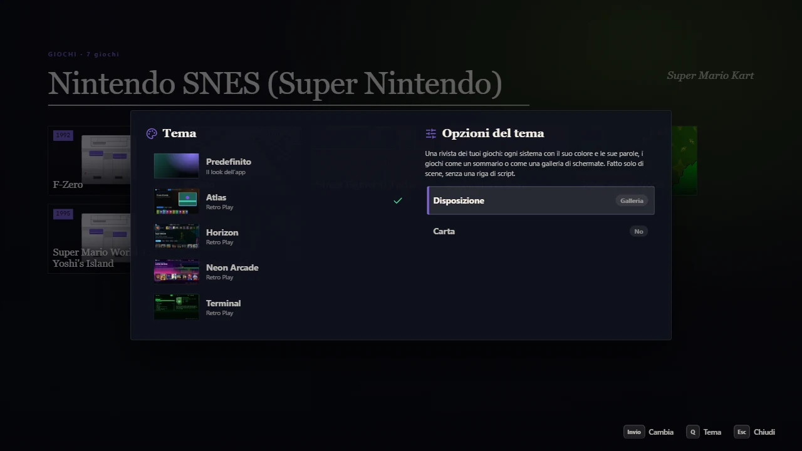

Una Desktop Mode come nessun’altra
Un tema cambia tutto ciò che vedi e senti nella Desktop Mode: colori, caratteri, immagini, suoni, parole, come sono disposte le schermate, perfino schermate intere scritte in JavaScript. Si comincia senza codice, e si arriva dove vuoi.

Tutti gli argomenti
Dal primo colore alle schermate tue.
Per iniziare
Cos’è un tema, e il tuo primo

Cos’è un tema
Da un colore a una Desktop Mode che non somiglia a nient’altro.

Il tuo primo tema in 5 minuti
Nuovo tema, l’editor, poi una riga di CSS.
La cartella del tema
I suoi file, i loro percorsi, impacchettarla in un .zip.
Fallo creare a un’AI
Descrivi il tema; lo scrive Claude Code o un altro assistente.
theme.json
Colori, caratteri, immagini, suoni, testi, opzioni
theme.json
Tutte le chiavi a colpo d’occhio.
Colori, caratteri, angoli
I colori di ogni parte, i caratteri, quanto arrotondare.
Sfondo e immagini
Uno sfondo per sistema, un’immagine per console, l’intro.
Suoni e musica
Ogni suono un file, note create sul momento, o nessuno; musica dietro.
Le parole dell’app
Di’ ciò che dice la Desktop Mode, con parole tue.
Opzioni per l’utente
Interruttori, scelte, colori e cursori che l’utente cambia.
Scene
Ogni schermata fatta degli elementi che metti tu

Scene: schermate che componi
Ogni schermata fatta di elementi che metti tu, legati al gioco col focus.
Gli elementi
Testi, immagini, video, liste, pulsanti: di cosa è fatta una scena.

Liste
File, colonne, griglie, ruote e coverflow, disegnati come vuoi.
Valori e condizioni
{focus.name}, i filtri, e quando un elemento si vede.

Varianti, sistemi, include
Layout tra cui scegliere, ogni sistema coi suoi colori e le sue parole.
CSS
Parti, stati, numeri e ricette
Script
Effetti e pagine tue, in JavaScript
Strumenti e aiuto
Ispettore, problemi, esempi